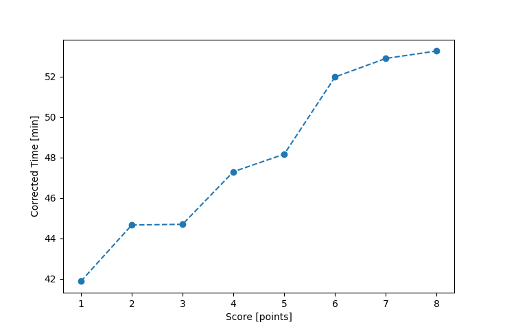

| Wind: | ? (BFT) |
|---|---|
| RC: | Barry_O |
| Date: | September 10, 2017 |
| Notes: | M2 180 |
| Rank / Score | Name | Boat | Input Time [mm:ss] | Input Offset [mm:ss] | Race Time [mm:ss] | Race Time [s] | Handicap | Corrected Time [s] | Corrected Time [mm:ss] |
|---|---|---|---|---|---|---|---|---|---|
| 1.0 | Xavier | SWSX | 41:38 | 00:00 | 41:38 | 2498 | 0.99400 | 2513 | 41:53 |
| 2.0 | Bill_P | SF | 46:00 | 00:00 | 46:00 | 2760 | 1.03000 | 2680 | 44:40 |
| 3.0 | Mike_F | SF | 46:02 | 00:00 | 46:02 | 2762 | 1.03000 | 2682 | 44:42 |
| 4.0 | Nedra_F | SF | 48:43 | 00:00 | 48:43 | 2923 | 1.03000 | 2838 | 47:18 |
| 5.0 | Ron_F | F5 | 47:15 | 00:00 | 47:15 | 2835 | 0.98100 | 2890 | 48:10 |
| 6.0 | Rod_H | PUF | 56:30 | 00:00 | 56:30 | 3390 | 1.08700 | 3119 | 51:59 |
| 7.0 | David_Bu | SF | 54:29 | 00:00 | 54:29 | 3269 | 1.03000 | 3174 | 52:54 |
| 8.0 | Lewis_V | BCN | 47:31 | 00:00 | 47:31 | 2851 | 0.89200 | 3196 | 53:16 |

Application Notes:
All race results are unofficial
View source code at https://github.com/cessnao3/portsmouthracecalc/